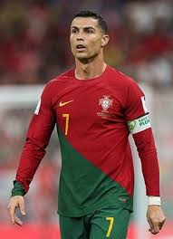
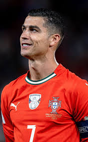

Cristiano Ronaldo



Cristiano Ronaldo is volgens ons de beste voetballer aller tijden. Hij combineert talent, discipline en doorzettingsvermogen op een manier die bijna geen enkele andere speler kan evenaren.
Zijn carrière begon bij Sporting Lissabon, maar hij brak echt door bij Manchester United. Daarna groeide hij uit tot een wereldster bij Real Madrid, waar hij vele prijzen won en records brak. Ook bij Juventus en Al-Nassr heeft hij laten zien dat hij op het hoogste niveau kan blijven presteren.
🏆 Meerdere Champions League titels
🌍 Wereldberoemd
Wat Ronaldo uniek maakt, is dat hij een complete speler is. Hij is snel, sterk, technisch vaardig en kan op verschillende manieren scoren. Daarnaast is hij mentaal erg sterk en presteert hij juist goed in belangrijke wedstrijden.
Naast zijn prestaties op het veld staat Ronaldo ook bekend om zijn professionele levensstijl. Hij traint hard, eet gezond en zorgt goed voor zijn lichaam. Hierdoor kan hij jarenlang op topniveau blijven spelen.
Voor ons is Ronaldo meer dan alleen een voetballer. Hij is een voorbeeld van wat je kunt bereiken met discipline en doorzettingsvermogen. Daarom is hij voor ons de ultieme favoriet.
Carrière hoogtepunten
- Meerdere Ballon d'Or prijzen
- Topscorer in de Champions League
- Europees kampioen met Portugal (2016)
- Vijf keer winnaar van de UEFA Best Player
- Topscorer in de Premier League, La Liga en Serie A
- Meer dan 800 officiële doelpunten in club- en nationale wedstrijden
- Speelde voor Sporting Lissabon, Manchester United, Real Madrid, Juventus en Al-Nassr
- Vijf Champions League-titels en meerdere nationale kampioenschappen
- Bekend om uitzonderlijke fysieke en mentale discipline
- Wereldberoemd en invloedrijk in de moderne voetbalgeschiedenis